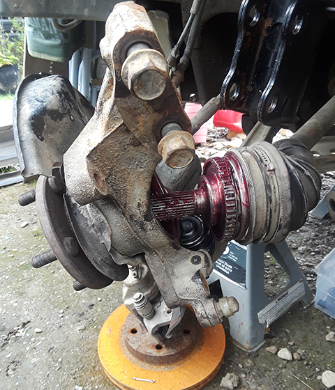
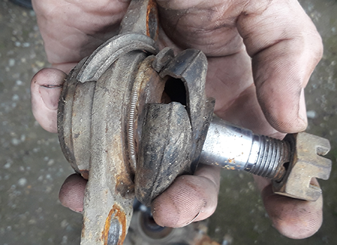
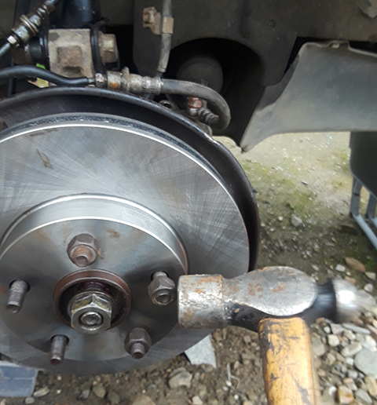
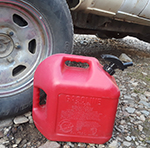
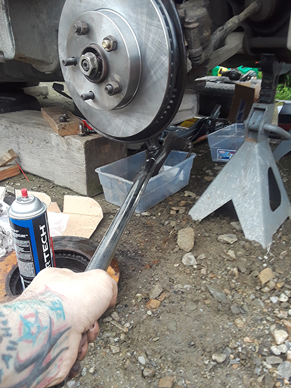

My idea for this site is it will be like a DIY guide for car repair/blog where I would take step by step pictures and instructions for what I was doing. That sort of site is something that I don't have any real interest in actually doing, so seems like it will be fun to play around with it.
Ok, so as all of you may have noticed not much has gotten done on the site in the way of DIY guides. To make up for this I have added a new feature the "Quick Conversion Calculator" for those of you who don't feel like Googling it. The first quick conversion is cubic in to cubic centimeters and more usefully, cubic liters. More to come!
Quick Conversion Calculator
Cubic Inch to Cubic Centimeters/Liters

Quick Conversion Calculator
Calculate MPG

Quick Conversion Calculator
